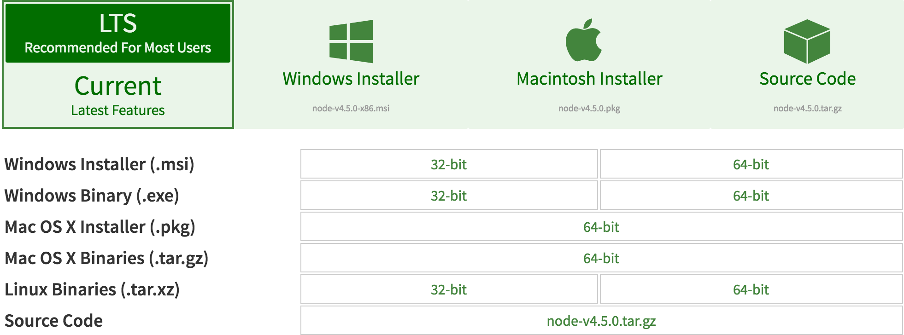

Node.js is a JavaScript runtime built on
Chrome's V8 JavaScript engine.
Node.js uses an event-driven ,
non-blocking I/O
model that makes it lightweight and efficient.
Node.js' package ecosystem, npm, is the largest ecosystem of open source libraries in the world.
Node.JS is available for all major platforms. Refer Node's download page for more info. 